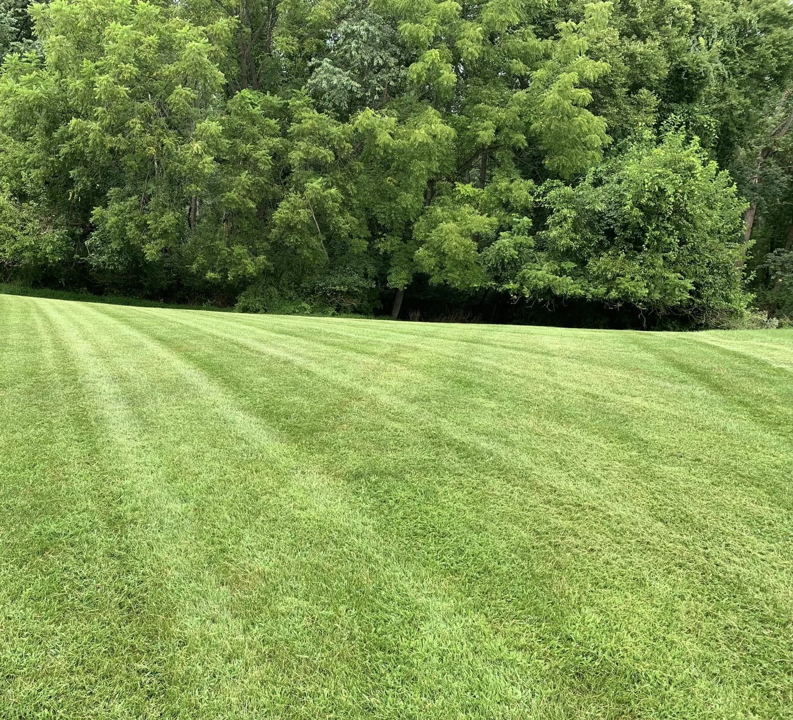
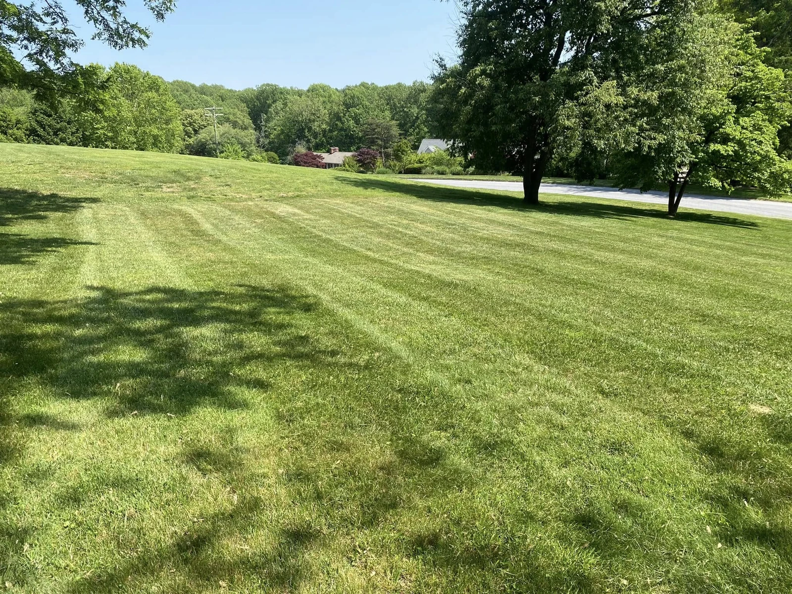
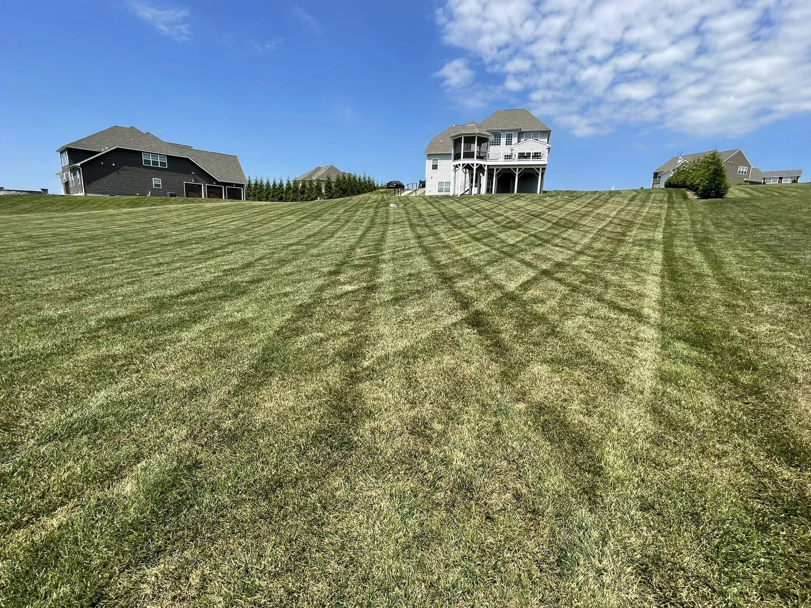
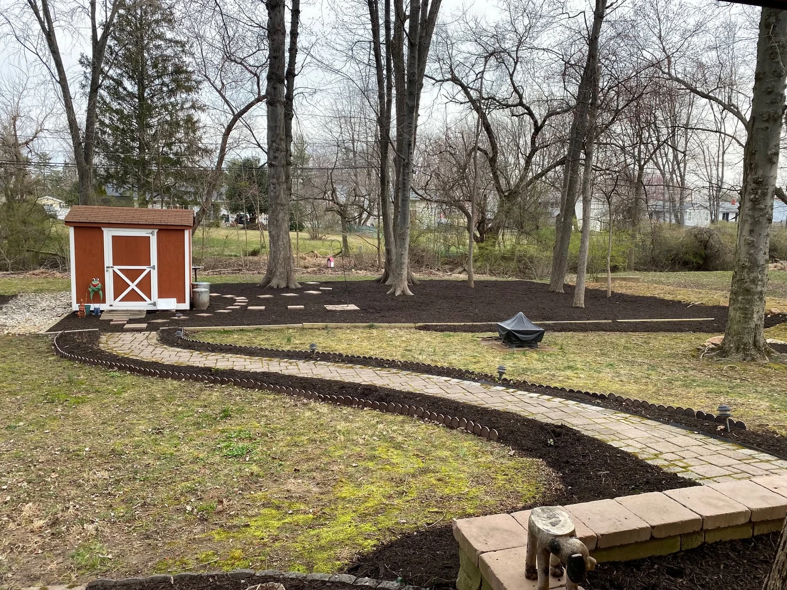
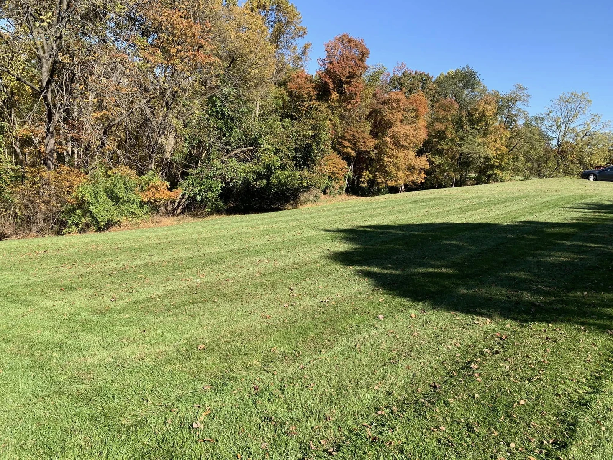

A LAWN TO COME HOME TO
Lawn care
Mowing and yard maintenance that keep your outdoor space looking cared for.
Book lawn careA freshly cut lawn. Beds with a little more care.
An outdoor space that feels like home.

Local care. A personal touch.
Take a look aroundTHE EVERYDAY. THE SEASONAL. THE DETAILS.
From keeping the grass in shape to bringing a mulch bed back to life. Tell Dylan what your yard needs.

A LAWN TO COME HOME TO
Mowing and yard maintenance that keep your outdoor space looking cared for.
Book lawn careCARE AROUND EVERY CURVE
Mulching, bed maintenance, and bush and tree trimming. Thoughtful upkeep for the spaces around your lawn.
Book landscape careWHEN THE SEASON CHANGES
Clearing for winter’s messier days. Talk with Dylan about your property and current seasonal availability.
Ask about winter careA FEW VIEWS FROM THE YARD
Real lawns. Real landscapes.
Photos shared by Dylan’s Lawn Care.






“Reliable, hardworking,
and a pleasure to work with”
“Dylan and crew were excellent”
A SIMPLE WAY TO GET STARTED
Choose lawn care, landscape upkeep, or a conversation about your project.
Pick an available appointment and share your property address and contact details.
He’ll review the request and confirm the details with you. A request isn’t a confirmed visit yet.
Choose Book an appointment to request time for a service at your property. If you need a price or want to discuss the work first, request an estimate or callback. Dylan reviews either request before confirming the details.
Dylan’s Lawn Care is based in Reisterstown, Maryland. Call or send an estimate request with your address to confirm whether your property is covered.
Your property address, the work you have in mind, and any useful details about access or the yard. Add your phone and email so Dylan can follow up.
Call 410-365-1265 and mention the reference shown when you submitted your request. Dylan can help with changes or questions about timing.
GOOD CARE BEGINS WITH A CONVERSATION
Fresh grass. Tidy beds. Your next favorite view.
Or call Dylan at 410-365-1265{kind=link}
{kind=link}
{kind=link}
{kind=link}
{kind=link}